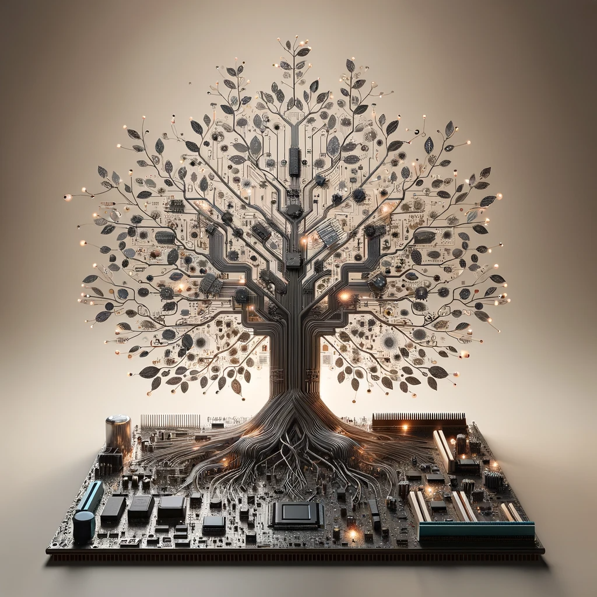
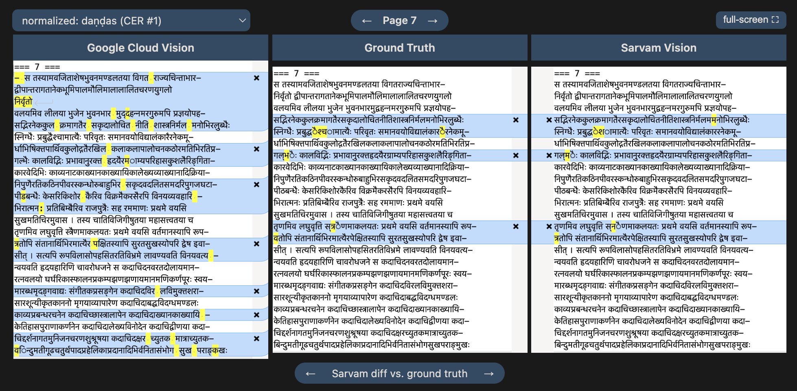
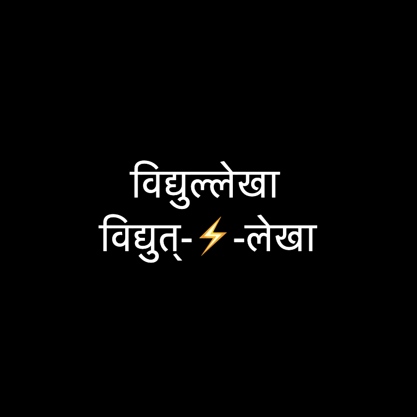
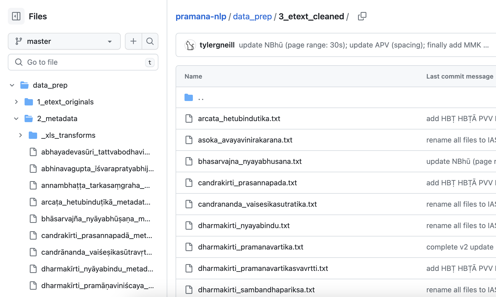

A blog on Sanskrit and tech, meant to share resources, identify gaps, and make new progress.
Come along!
-
Sanskrit Tech Tidbits
July 23, 2026
A quick roundup of new tools: Vāgdhenu TTS chanting, an unofficial Dharmamitra Telegram bot, Aksharamukha's Uchcharaka transcriber, and the new Cologne dictionary web app.
-

Quarterly Update: Apr–Jun 2026
July 16, 2026
Second quarterly update: mostly Skrutable upgrades, but also progress on HANSEL, Kalpataru Grove infra, Muktabodha, and the "large e-text collections" project, too.
-

A Second Pair of Eyes: Skrutable adds Sarvam Vision OCR
July 8, 2026
Promising performance notes and how-to.
-

Skrutable Meter Identification Upgrades
June 26, 2026
More accurate, more detailed, faster, and visual multi-verse browsing. Also, the Mahāsubhāṣitasaṃgraha as benchmark.
-
Quarterly Update: Jan–Mar 2026
April 5, 2026
A first quarterly update: Kalpataru Grove is born, Claude Code changes everything, Pāṇḍitya and Skrutable get UI updates, HANSEL gets new texts and capabilities, and I hint at a new project for keeping up with large e-text collections.
-

Kalpataru Grove
February 6, 2026
Articulating the vision of my ecosystem of Sanskrit digital tools and resources.
-

HANSEL: A companion to GRETIL
December 19, 2025
A new platform to pick up where GRETIL left off, welcoming contributions of academic Sanskrit e-texts.
-
Status Check (mini-post)
September 15, 2025
A brief update on what's been happening behind the scenes and what's coming next.
-

SETI: The New Register for Sanskrit E-Texts
April 23, 2025
Introducing an index of Sanskrit electronic texts to help scholars discover digitized materials across major collections.
-

Pāṇḍitya: A New Visual Exploration Tool for Sanskrit Intellectual Networks
February 7, 2025
Exploring connections between Sanskrit scholars, texts, and traditions through interactive network visualization.
-

Splitter Options
October 31, 2024
Comparing Sanskrit word-splitting tools, especially model-based tools like ByT5-Sanskrit, with accuracy and speed benchmarks.
-

GRETIL: Past and Present
July 6, 2024
The history and current state of one of the most important repositories of digitized Sanskrit texts.
-
OCR Options
May 5, 2024
A practical guide to optical character recognition tools for Sanskrit (and other) documents, from Google Cloud Vision to Tesseract.
-

Vātāyana
April 7, 2024
A novel system for extracting expert philological insights from a corpus of Sanskrit philosophy texts, combining LDA topic modeling, TF-IDF, and local text alignment.
-

Pramāṇa NLP
March 24, 2024
A curated corpus of Sanskrit philosophy texts designed for natural language processing, with five key design principles.
-

Skrutable
March 10, 2024
The story of my Sanskrit text processing toolkit: transliteration, meter analysis, word splitting, and OCR.
-
Tools of the Trade
February 25, 2024
Preferred coding tech: Python, PyEnv, Flask, GitHub, Digital Ocean, and more.